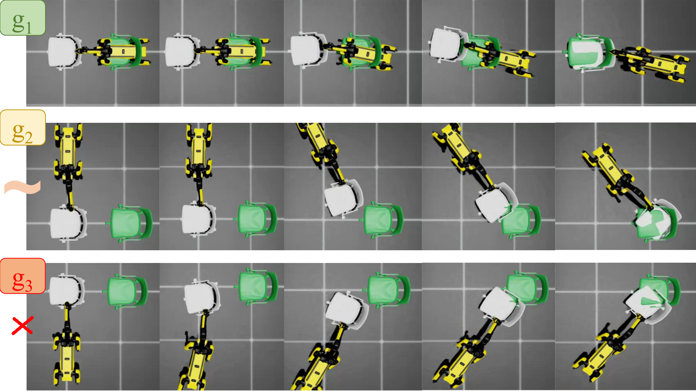
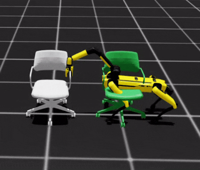
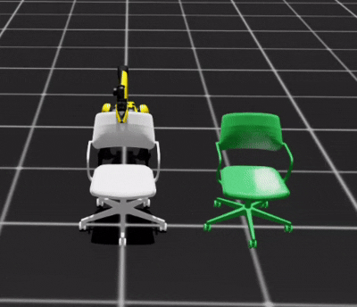
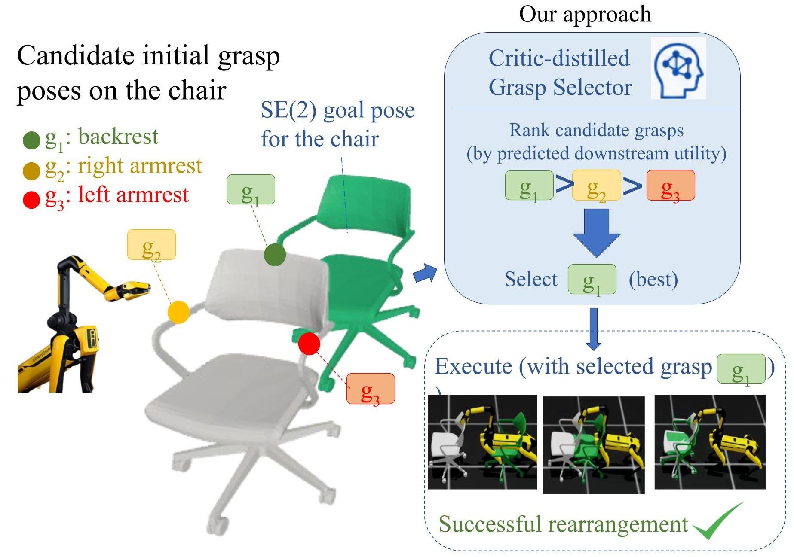
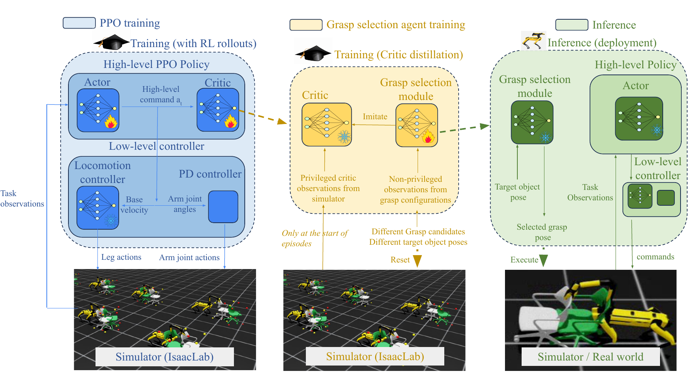
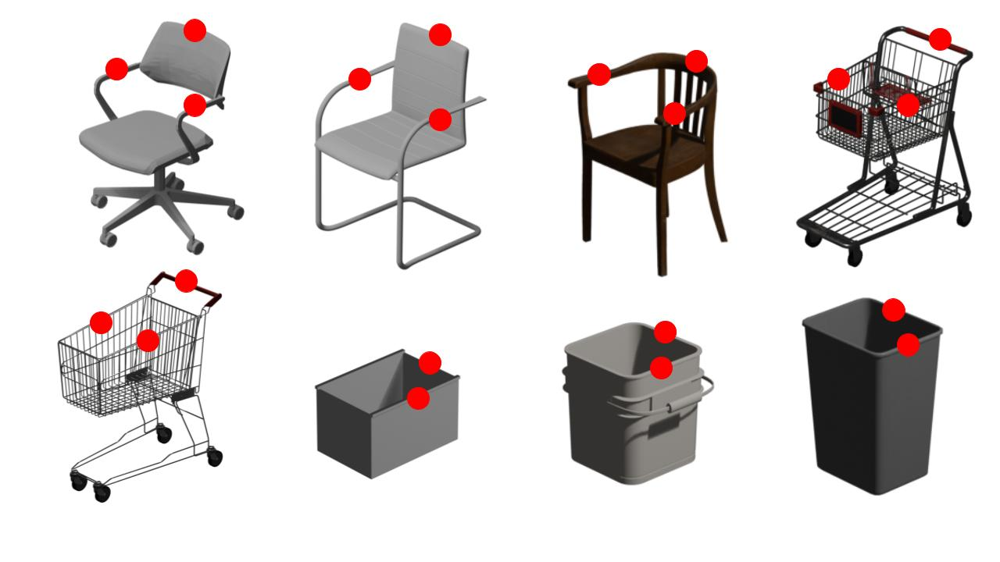
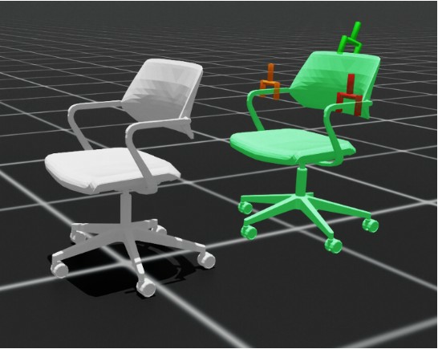
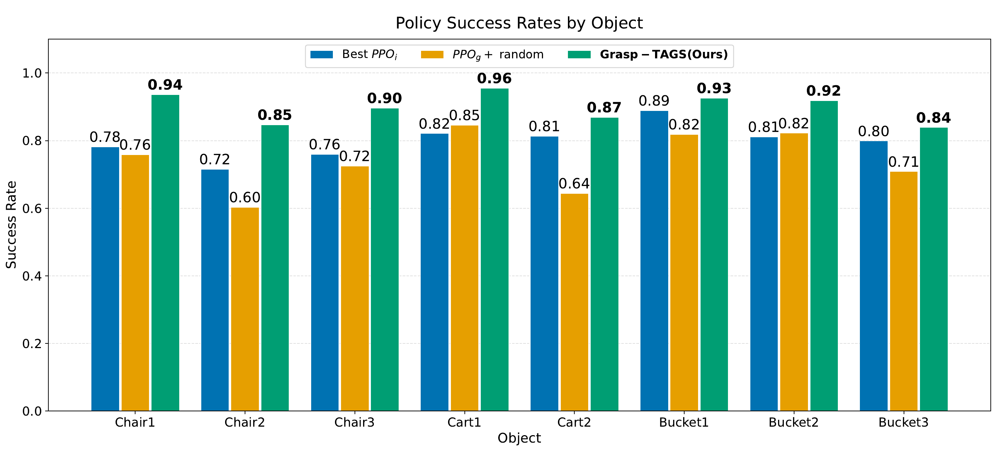

Loco-manipulation, in which mobile manipulators coordinate locomotion and manipulation over long horizons, is an important paradigm for large-object rearrangement in service robotics and warehouse automation. Reliably executing these tasks remains challenging because performance depends on complex robot-object interaction dynamics. Existing learning-based approaches reduce the need for accurate dynamics models, but typically assume a fixed or predefined initial grasp. In practice, different feasible grasps can lead to substantially different downstream manipulation performance.
We propose Grasp-TAGS, a task-aware grasp selection framework for goal-conditioned large-object rearrangement. A unified PPO policy is trained across multiple initial grasp configurations, and its learned critic is distilled into a lightweight grasp utility network that ranks candidates using only pre-interaction grasp and goal information. At inference time, the highest-utility grasp is selected before the downstream policy executes. Simulation experiments on household objects show improved rearrangement success over fixed single-grasp policies and random grasp selection, together with lower final orientation error across the evaluated objects.
Large objects such as chairs, carts, and buckets require coordinated base and arm motion to reach a desired planar pose. Although several candidate grasps may be feasible and stable, each establishes a different robot-object interaction configuration. Those configurations affect controllability, long-horizon behavior, and ultimately task success.

For example, the same chair and target can lead to markedly different outcomes depending on the initial grasp. The comparison below shows that a backrest grasp supports reliable target alignment, whereas the two armrest grasps are less favorable for the downstream motion to the chair backward


Task-aware grasp selection is the pre-execution decision of choosing the grasp expected to best support a specified downstream task. Rather than selecting a grasp only because it is reachable or stable, it ranks feasible candidates by their predicted long-horizon utility for the current object pose and goal.
Grasp-TAGS uses this ranking to select a candidate before the manipulation policy runs. The selected grasp gives the policy a more favorable robot-object configuration from which to complete the planned rearrangement.

Unlike conventional mobile-manipulation settings that assume a fixed grasp configuration, Grasp-TAGS considers multiple feasible grasp poses on the target object. Each pose induces a distinct robot–object interaction configuration and, consequently, different manipulation dynamics. The objective is to learn one manipulation policy that transports the object to a desired planar pose under different initial grasps, then select at inference time the grasp with the highest expected utility for completing the rearrangement task.

Large-object rearrangement requires coordinated locomotion and manipulation over long horizons. Because directly learning a unified whole-body policy over all robot joints is difficult in a high-dimensional action space with complex robot–object interactions, Grasp-TAGS adopts a hierarchical controller: a pretrained low-level locomotion controller maintains stable base motion, while a high-level task policy generates commands for object rearrangement.
The high-level command specifies base linear velocity, base yaw rate, and six arm-joint displacements. Arm commands are executed by PD controllers to hold the object, while the velocity commands are processed by the fixed locomotion policy to maintain stability and track the desired base motion. The high-level controller is trained with PPO in RSL-RL, while the pretrained low-level policy remains fixed.
Rather than training an independent high-level policy for every grasp, Grasp-TAGS trains one PPO policy across multiple initial grasp configurations. At the start of each episode, the environment samples a predefined feasible grasp pose; after establishing the grasp, the robot transports the object to a target planar pose. The initial grasp is implicitly represented by the arm joint angles, allowing the policy to learn behaviors across both grasp configurations and rearrangement objectives.
This unified policy captures the diverse interaction dynamics induced by different robot–object contact configurations without separate training procedures. Its value function also provides a common measure of expected long-horizon manipulation performance across candidates. The reward encourages task completion and smooth motion while penalizing undesired contacts and object toppling.
The PPO critic estimates the expected discounted return from its critic observation, implicitly encoding the downstream utility of each grasp: configurations that enable more successful, efficient, and stable rearrangement receive higher value estimates. However, the critic uses privileged simulator information, including physical properties such as object mass and velocity, that is unavailable before interaction at deployment.
Grasp-TAGS distills these grasp-dependent critic values into a lightweight utility network that uses only the candidate grasp configuration and target object pose in the initial object frame. After policy training, the network regresses its utility predictions to critic values from sampled initial states. At inference time, it evaluates every candidate, selects the grasp with the highest predicted utility, and executes the learned manipulation policy conditioned on that grasp.
Grasp-TAGS combines a stable hierarchical loco-manipulation policy, grasp-conditioned PPO training, and critic distillation to turn long-horizon task value into a practical pre-interaction grasp decision. This lets the robot choose the grasp expected to best support the desired large-object rearrangement before policy execution.
We construct a dataset of eight common large household objects from Fab: three chairs, two carts, and three buckets. These categories cover diverse geometric structures while remaining representative of the large-object rearrangement settings considered in this work.
For each object, we manually define feasible initial grasp configurations and compute their inverse-kinematics solutions. Chairs use candidate grasps on the two armrests and backrest; carts use the two sides of the basket and the handle; and buckets use their two edges.

The initial grasp configuration substantially affects downstream loco-manipulation performance. The example below visualizes the relative grasp utility predicted for a target object pose: the selector uses this task-aware estimate to choose the grasp expected to provide the most effective control throughout execution.

Choose an object and target object pose to compare Grasp-TAGS with random grasp selection and the fixed single-grasp policies. Each grid contains all available methods for the same evaluation setting.

Combining the unified grasp-conditioned policy with the proposed grasp-selection network improves overall task success. Grasp-TAGS achieves the highest success rate across all evaluated objects, showing that task-aware grasp selection improves the probability of completing the target rearrangement task.
For Chair1, Grasp-TAGS reaches a 93.65% success rate, compared with 75.88% for random grasp selection and 70.09–78.20% for the individual single-grasp policies. The same trend is observed for the other objects, demonstrating that task-aware selection can outweigh the advantage of individually specialized policies.
The table below reports simulated large-object rearrangement results. PPOi denotes policies trained for individual candidate grasps, with slash-separated values corresponding to each candidate (three for chairs and carts, two for buckets). Higher success rates are better; lower positional and angular errors are better.
| Object | Metric | PPOi | PPOg + random | Grasp-TAGS |
|---|---|---|---|---|
| Chair1 | Success rate (%) | 70.09 / 75.46 / 78.20 | 75.88 | 93.65 |
| Planar positional error | 0.0292 / 0.0250 / 0.0366 | 0.0281 | 0.0162 | |
| Angular error | 0.3571 / 0.2850 / 0.2802 | 0.2407 | 0.0712 | |
| Keypoint angular error | 20.4597 / 16.3271 / 16.0567 | 13.7906 | 4.0793 | |
| Chair2 | Success rate (%) | 63.79 / 71.51 / 70.00 | 60.28 | 84.72 |
| Planar positional error | 0.0340 / 0.0161 / 0.0142 | 0.0450 | 0.0239 | |
| Angular error | 0.5268 / 0.3421 / 0.3732 | 0.4382 | 0.1308 | |
| Keypoint angular error | 30.1858 / 19.5889 / 21.3821 | 25.1091 | 7.4923 | |
| Chair3 | Success rate (%) | 75.93 / 68.41 / 72.22 | 72.49 | 89.62 |
| Planar positional error | 0.0204 / 0.0626 / 0.0307 | 0.0410 | 0.0309 | |
| Angular error | 0.3546 / 0.4425 / 0.3628 | 0.3616 | 0.1212 | |
| Keypoint angular error | 20.3148 / 25.3516 / 20.7884 | 20.7177 | 6.9462 | |
| Cart1 | Success rate (%) | 82.13 / 68.48 / 67.38 | 84.62 | 95.51 |
| Planar positional error | 0.0291 / 0.0989 / 0.0924 | 0.0426 | 0.0283 | |
| Angular error | 0.1716 / 0.2522 / 0.3781 | 0.1471 | 0.0575 | |
| Keypoint angular error | 9.8312 / 14.5265 / 20.9177 | 8.4009 | 3.2925 | |
| Cart2 | Success rate (%) | 62.96 / 81.32 / 72.75 | 64.38 | 86.89 |
| Planar positional error | 0.0901 / 0.0235 / 0.0762 | 0.1158 | 0.0551 | |
| Angular error | 0.4028 / 0.3335 / 0.3844 | 0.3710 | 0.1321 | |
| Keypoint angular error | 23.0807 / 19.1110 / 22.0228 | 21.2587 | 7.5734 | |
| Bucket1 | Success rate (%) | 88.89 / 86.18 | 81.86 | 92.58 |
| Planar positional error | 0.0101 / 0.0280 | 0.0201 | 0.0138 | |
| Angular error | 0.1428 / 0.2250 | 0.2455 | 0.1279 | |
| Keypoint angular error | 8.1790 / 12.8935 | 14.0673 | 7.3268 | |
| Bucket2 | Success rate (%) | 76.10 / 81.08 | 82.23 | 91.87 |
| Planar positional error | 0.0219 / 0.0220 | 0.0144 | 0.0105 | |
| Angular error | 0.3370 / 0.2490 | 0.2822 | 0.1343 | |
| Keypoint angular error | 19.3076 / 14.2670 | 16.1711 | 7.6976 | |
| Bucket3 | Success rate (%) | 79.91 / 70.00 | 70.85 | 83.89 |
| Planar positional error | 0.0258 / 0.0265 | 0.0689 | 0.0290 | |
| Angular error | 0.2598 / 0.3199 | 0.3609 | 0.2276 | |
| Keypoint angular error | 14.8877 / 18.3309 | 20.6764 | 13.0426 |
Grasp-TAGS is a task-aware grasp-selection framework for prehensile, goal-conditioned large-object loco-manipulation. By training one unified manipulation policy across multiple initial grasp configurations, its learned critic captures the long-horizon utility of different grasps. Distilling these values into a lightweight grasp-utility network enables the robot to select a suitable grasp before physical interaction without explicitly estimating privileged object properties. Our simulation results show improved rearrangement success over fixed and randomly selected grasp configurations; future work will extend evaluation to additional household objects and real-world deployment on the SPOT platform.